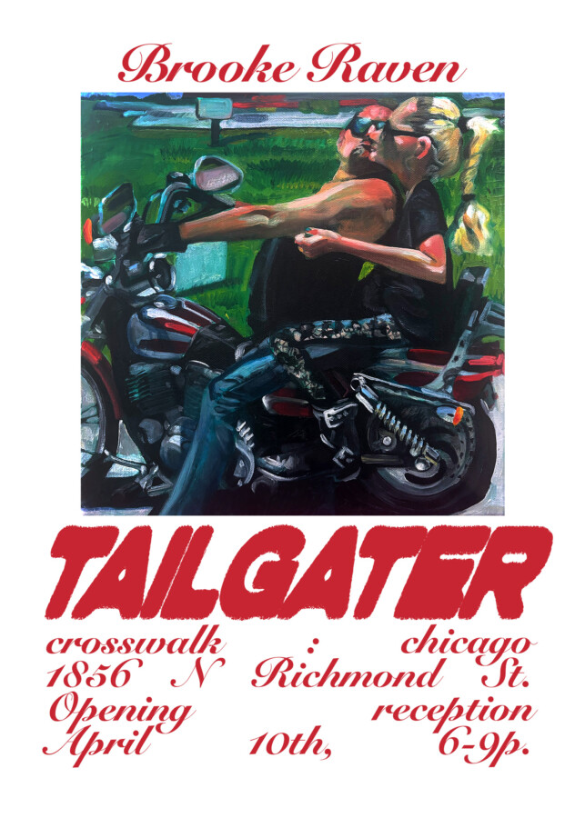

Brooke Raven: TAILGATER
crosswalk is proud to announce, TAILGATER, a solo by Brooke Raven. TAILGATER’s opening reception takes place 4.10.26 (6-9pm). The show will run from 4.10.26 – 5.1.26.
“Born out of boredom, sowed by substance, and reaped in a moment of powerlessness against self indulgence, a digital sinkhole of information tactlessly hurled by the rural midwesterner exists in a dusty corner of the internet.”
Brooke Raven is a Chicago-based painter and Central Illinois native examining social dynamics in rural America. Raven’s work mythologizes the monotonous small town existence, represented through the public internet archive of its subjects, and considers the much less public gossip accumulated through personal experience.
Select recent exhibitions include CORN BRED, Raven’s 2025 duo exhibition with Travis Don Warner @travisdonwarnerart at Hexx Gallery @hexx_gallery , Ruby/Dakota New York’s “Feet Pics,” (2026) @ruby_dakota.ny “Chemical X” at Evoke Gallery Chicago @evokegallerychicago , curated by October Sharify @impology (2025), and [name] gallery’s GRWM @name___gallery (2026).